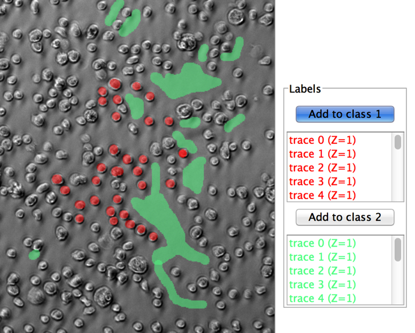

Before getting started please make sure you do the following.
- Open Fiji by typing 'Fiji' into the terminal of the linux workstation. You can find the Terminal by searching for it or by the short-cut: 'Ctrl + Alt + T'.
- In Fiji goto Analyze->Set Measurements. Make sure at least Area, Mean Gray, value are checked.
- In Fiji Image->Options->Color, please make sure that Foreground=Black, Background=White and Selection=Yellow.
- Goto the folder entitled: "day4_machineLearning" you will need the files in this folder.
The goal of this practical is to use an interactive Random Forest machine learning approach for segmenting cells from their background in wide-field images. Next in python you are going to classify which cell-type is which by performing clustering on the input data.
1a) Using Fiji open the image file: 'wide-field-1.tiff'. You will find an image which has two channels. One fluorescent channel (green) and one bright-field image (grayscale). Both cells are visible in the grayscale image. The larger cells (dendritic cells) are expressing a protein, which is fluorescent in the green-range of the spectrum. The T-cells are smaller and are not expressing a protein meaning they can only be recognised in the bright-field channel.
Question) What wavelength was the green channel collected on. Hint: Meta-data.
1b) If you change the hyperstack visualisation to be composite you can see which cells are which by whether they are positive for green or not Image->Color->Composite.
1c) Split the bright-field image into independent channels Image->Color->Split Channels. Select the grayscale image containing bright-field image of the cells. Ignore the green channel for now. Open the Weka Segmentation software Plugins->Segmentation->Trainable Weka Segmentation. We want to classify what is cell and what is background, don't worry about distinguishing the different cell types for now. Double click the Oval tool on the Fiji toolbar (2nd from left). Select Enable selection brush and set size to '10'. Within the Weka software paint a cell and then click add, paint another and click add, all to the same class. Once you have done about 20 (more if you like). Paint some of the background and add this to the 2nd class to represent background.
When you click 'Train' you should have something like this:

1d) It is important that the classification is accurate. If it is not accurate try and refine the annotation so it more closely fits the cells. Save the classifier, so you can evaluate other files later on. Click 'Get Probability' to extract the probability representation. Close the Weka plugin.
Question) How could you potentially improve the quality of classification using the options available in this plugin?
1e) Now we want to threshold our Probability map (the one where the cells are white) and leave the background image. Split the stack Images->Stacks>Stack to Images. The image is 32-bit which is a floating point format. Notice the pixels have decimal value when you put the cursor over them. In this mode you can't apply a conventional threshold so beforehand convert the image to 8-bit (Image->Type-8-bit). Apply a threshold to the image (try 'Moments').
Why do you think the classifier exports images in a floating point format? How does a random forest classifier generate a probability?
1f) Now goto Process->Binary->Watershed. This is a crude method for splitting big blobs into smaller ones. Hopefully it will separate most blobs into cell-sized areas. We now want to add these to the ROI manager so we can measure each one independently. First of all make sure the ROI manager is empty, we don't want to add to any existing labels. Next, to add, goto Analyze->Analyze Particles. Make sure 'Add to Manager' is checked and then click 'OK'.
1g) After adding the cells to the ROI manager explore the different cells by click on the numbers (object instances) in the ROI manager (Analyze->Tools->ROI Manager) you should find that individual cells are illuminated.
Question) How many cells are there in your image?
Question) If you get time try and evaluate a fresh image (e.g. 'wide-field-3.tif') with the same random forest classifier (which you saved). How did it go? If it didn't go well how might you improve this? How can you judge the performance of this?
2a)For one of your images, after adding the cells to the ROI manager explore the different cells by click on the numbers (object instances) in the ROI manager (Analyze->Tools->ROI Manager) you should find that individual cells are illuminated. Now click your green channel image. If you click on object instances now, you should see that specific ROI are highlighted in this image. We want to sample the green fluorescence in each cell. To do this, first make sure you right statistics are selected. To do this goto Analyze->Set Measurements and select 'Area', 'Mean gray value', and 'Centroid'. Highlight all the object Instances and then click 'Measure' button on the ROI Manager tool. A Results table should appear with stats for each of the cells. Click the Results table and click 'Save As'. Save the table somewhere easy to find.
2b) The next section involves using Python. Open the ipython notebook contained within this folder.
(c) Dominic Waithe 2015. University of Oxford.